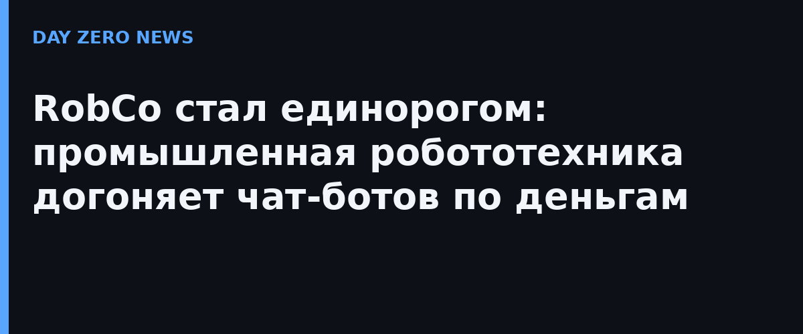

Компания RobCo, основанная в Мюнхене в 2020 году, объявила 5 октября 2026-го, что её оценка превысила $1 млрд — за девять месяцев она удвоилась. Схема необычная: это не классический раунд, а сделка, в которой свежие инвестиции в компанию сочетаются с продажей долей сотрудниками (secondary). Среди участников — действующие инвесторы Sequoia, Lightspeed, Greenfield, Kindred, Lingotto и Promus Ventures, а также новые: Cherry Ventures и European Tech Collective, объединение основателей самых успешных технологических компаний Европы.
В центре бизнеса — робот Alfie, «автономный промышленный робот», который объединяет восприятие, рассуждение и исполнение и берётся за задачи, десятилетиями недоступные классической автоматизации: разнородное, неструктурированное и критичное с точки зрения безопасности производство. Коммерческий запуск Alfie обещают на собственной конференции RobCoN в Мюнхене 4 марта 2027 года. «Следующий рубеж ИИ — физический», — формулирует команда: искусственный интеллект должен не только генерировать текст, но и действовать в реальном мире.
RobCo удваивает ставки на американский рынок — сейчас это самый быстрорастущий для компании: клиенты более чем в десятке штатов, производство и сборка в Остине (Техас), лаборатория в Сан-Франциско, а генеральный директор Роман Хёльцль лично переехал в США. «Оценка в миллиард — incredible milestone, но нас больше вдохновляет то, что впереди: вывод следующего поколения автономной промышленной робототехники на заводские полы», — сказал он. Партнёр Sequoia Люциана Ликсандру добавила, что верит: это только начало.
Единороги в промышленной робототехнике Европы — штучный товар, и сделка RobCo показывает, куда перетекает капитал: от чат-ботов к «физическому ИИ», который закрывает кадровый голод и давление издержек на реальных фабриках. Для рынка это сигнал, что автономные мобильные манипуляторы перестали быть лабораторной игрушкой и стали предметом первой необходимости в производстве.